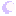

pixel shelf
A little tray of original pastel pixel doodles made for this site. They are intentionally simple, tiny, and extremely bunny-adjacent.
starter pixels
all included in /assetsheart
star
flower

moonpixel note
low-stress art policyThese starter graphics are tiny original decorations for this site. The fun part is that this page can grow whenever I make another little pixel thing. No masterpiece requirements allowed.